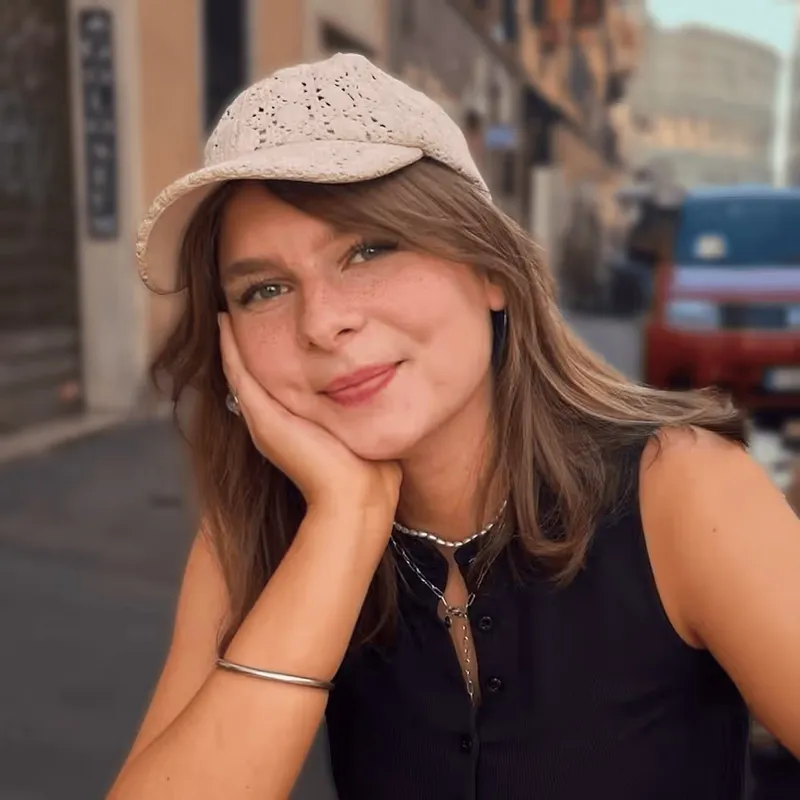

01 / mission
We investigate, animate and tell stories that matter.
Select projects are produced in partnership with established outlets, bringing their reporting to life.
more about us



The teamYouTube outlet reaching over 5 million subscribers.
hero-reel.mp4 · 00:10
We worked with


01 / mission
Select projects are produced in partnership with established outlets, bringing their reporting to life.
more about us02 / animation
Our work began with animation, using it to visualize complex information and tell important stories that are otherwise hard to convey.
03 / reporting
Since then, we have expanded that approach to include investigative on-the-ground reporting and in-person interviews.
In recent years, we’ve been fortunate to work with several acclaimed outlets and journalists. Our videos amplify their stories, highlight their reporting, and deliver them to new audiences.


04 / sponsors
Every sponsor segment is custom-made, animated, and designed to be part of the episode itself by being directly written into the narrative. This makes our partnerships truly native.


05 / jobs
We are always looking for talent. Check out our current open roles and come join the team.
There are currently no jobs available.
About us
We believe video is the future of journalism: a way to reach audiences beyond traditional media and deliver in-depth reporting in an increasingly brutal war for attention.
The channel was originally founded by the team behind Simplicissimus and Hoog. Hoog has since stepped away to focus on other projects, aside from occasional voice-over work. While we maintain an office in Amsterdam, our team is spread across Europe.
Today, around 100 people work across our channels and podcast, which for now is available only in German. You can meet many of our core team members below. We’ve partnered with Electrify since January 2025.

The channel was originally founded by the team behind Simplicissimus and Hoog.

Simplicissimus
210k
followers

Simplicissimus
2.3 Mil
subscribers

Simplicissimus
190k
followers
~/awards %
Awards
The team behind fern has been honored with several creative awards.

Get in touch. Business enquires? Send us an email fern@1up.management
 FAQ
FAQfern is a play on the German words “Fernweh” (a longing for distant places, or homesickness for a place you’ve never been) and “fernsehen” (to watch television). It’s also a plant in English, hence the green.
fern is the brainchild of German YouTubers David and Jonas (Simplicissimus, 2 Bored Guys), and Dutch YouTuber Hoog. He has since stepped back to focus on his main channel, but remains the voice behind some videos.
In 2025, we took an investment from Electrify to stabilize the company and reduce the day-to-day operational load on the founders. That allowed us to grow the team and focus on making better videos than ever. Electrify isn’t involved in the creative process, and we remain editorially independent.
We work with a team of dedicated 2D and 3D animators, and tend to use AI only in the background for non-creative tasks like upscaling, image extension, or file organization. Beyond legal and ethical questions, we believe people value work that other humans have put real care and intention into. We use generative AI only very selectively.